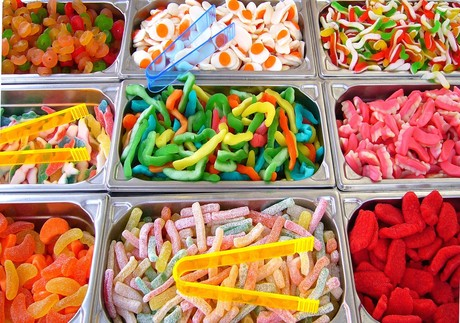

Guía de estudio para el JLPT N5: Adjetivos i parte 3
Continúo en este artículo con la 3ra y última parte de la lista de adjetivos-i que se evaluarán en el exámen JLPT N5.
Si ésta es tu primera vez leyendo la guía, te invito a conocer las demás secciones que he escrito de ésta haciendo click en la etiqueta JLPT-N5.
1. Peligroso

あぶない
Abunai
2. Dulce

あまい
amai
3. Bueno
よい / いい
Yoi / ii
4. Ocupado
いそがしい
Isogashii
5. Adolorido
いたい
Itai
6. Picante
からい
Karai
7. Tierno

Foto vía GP
かわいい
Kawaii
8. Sucio

きたない
Kitanai
9. Divertido
Foto por Glenn
たのしい
Tanoshii
10. Fuerte

Vía GP
つよい
Tsuyoi
11. Rápido
はやい
Hayai
12. Bajito
Foto por Marina
ひくい
Hikui
13. Gordo
Imagen por Niccolo
ふとい
Futoi
14. Querer algo

Gif animado por Olivia
ほしい
Hoshii
15. Delgado, estrecho

Foto por Maury
ほそい
Hosoi
16. Redondeado
まるい
Marui
17. Difícil
Foto por UGL_UIUC
むずかしい
Muzukashii
18. Amable
やさしい
Yasashii
19. Joven
わかい
Wakai
Con esto termino todos los adjetivos-i que se evaluarán en el exámen. Quedo pendiente de escribir sobre el listado de adjetivos-na (que es mucho menor).
Mi recomendación para aprender los adjetivos-i es asociar cada uno con algo chistoso para facilitar la memorización. Para ello me reunía con mis compañeros y cada uno pintabamos un adjetivo-i en el tablero mientras los demás tratabamos de identificarlo. Al final nos acordabamos de muchos de los adjetivos-i porque los dibujos que hacíamos eran muy cómicos (por lo mal hechos o porque no tenían nada que ver con el significado jejeje).
Por último les dejo una tabla con el listado de adjetivos de éste artículo:
| Hiragana | Romaji | Significado |
|---|---|---|
| あぶない | abunai | Peligroso |
| あまい | amai | Dulce |
| よい / いい | yoi / ii | Bueno |
| いそがしい | isogashii | Ocupado |
| いたい | itai | Adolorido |
| からい | karai | Picante |
| かわいい | kawaii | Tierno |
| きたない | kitanai | Sucio |
| たのしい | tanoshii | Divertido |
| つよい | tsuyoi | Fuerte |
| はやい | hayai | Rápido |
| ひくい | hikui | Bajito |
| ふとい | futoi | Gordo |
| ほしい | hoshii | Querer algo |
| ほそい | hosoi | Delgado, estrecho |
| まるい | marui | Redondeado |
| むずかしい | muzukashii | Difícil |
| やさしい | yasashii | Amable |
| わかい | wakai | Joven |
Vía NI
Imagen principal por Carlos
Artículos Relacionados

Guía de estudio para el JLPT N5: Adjetivos na parte 1